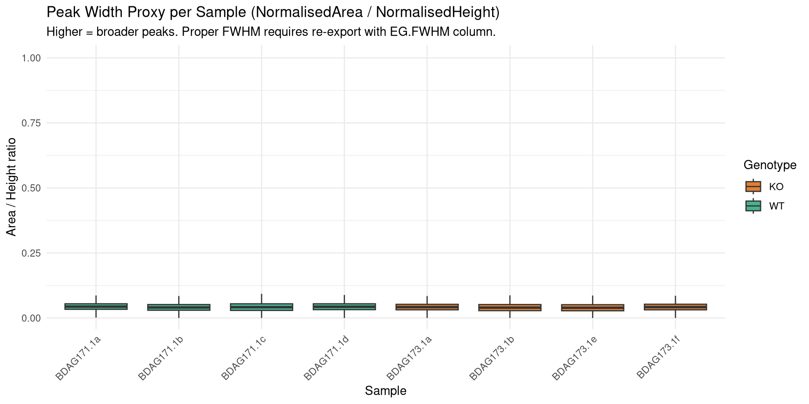
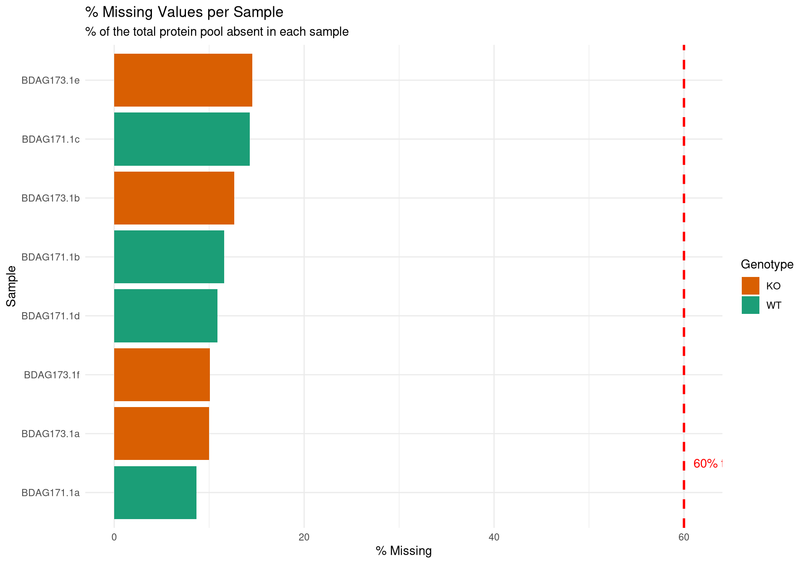
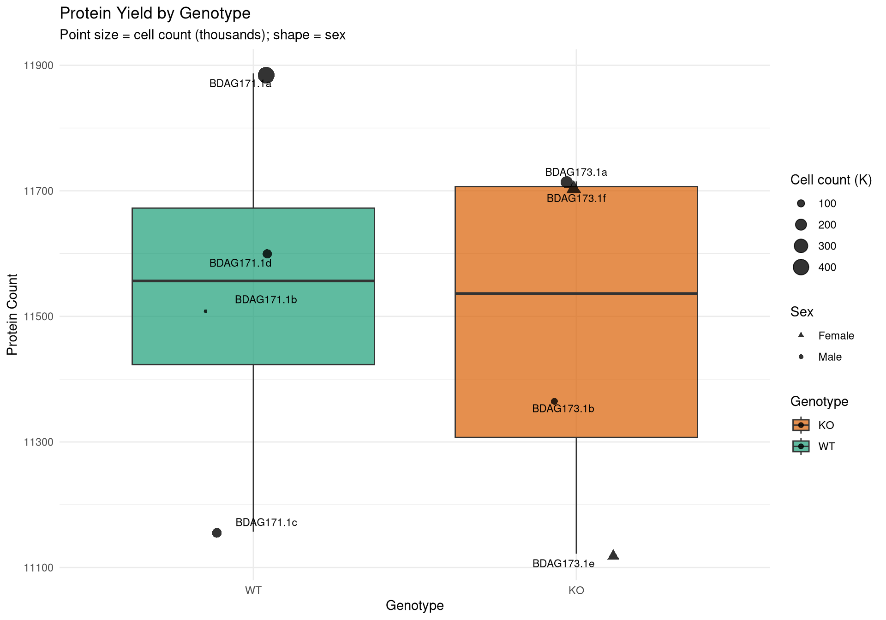
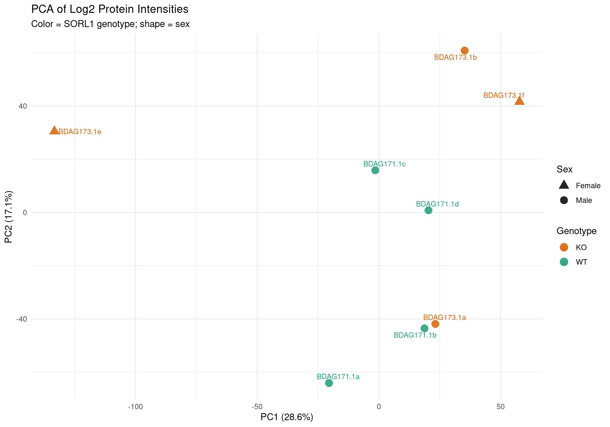
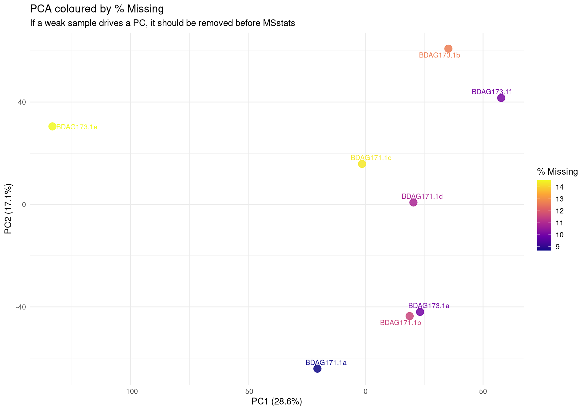
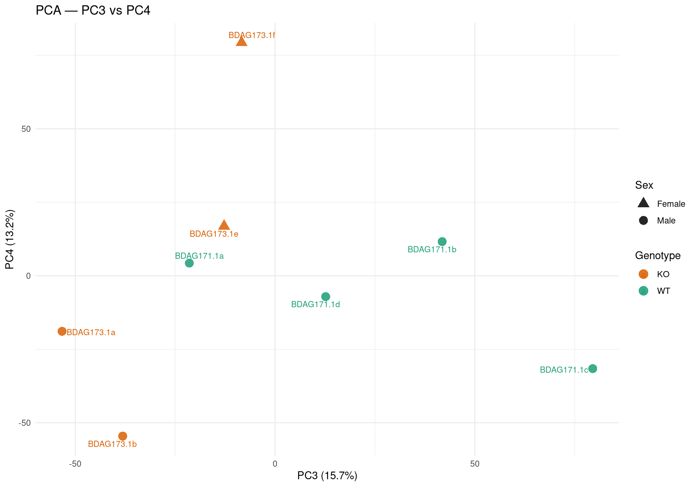
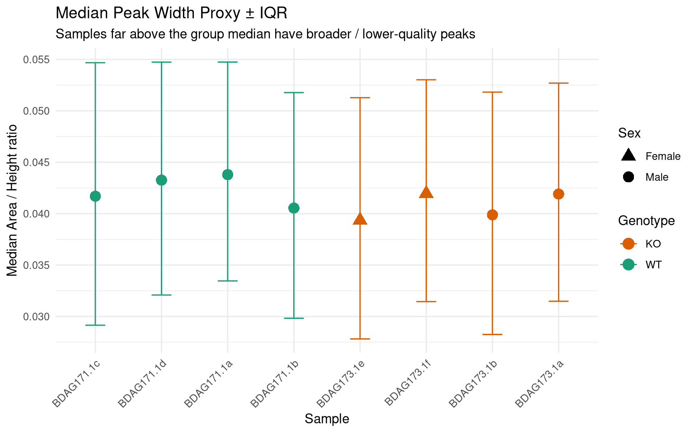
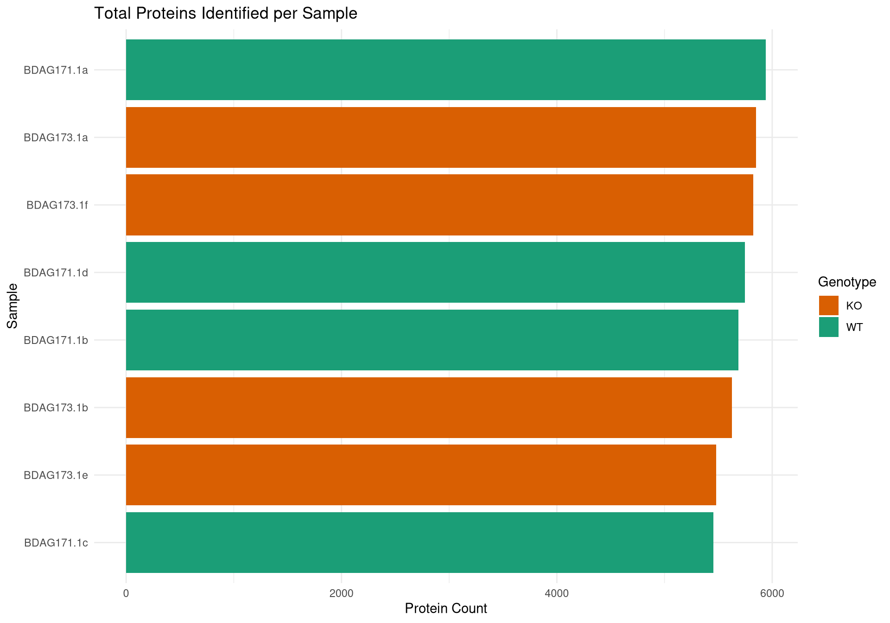
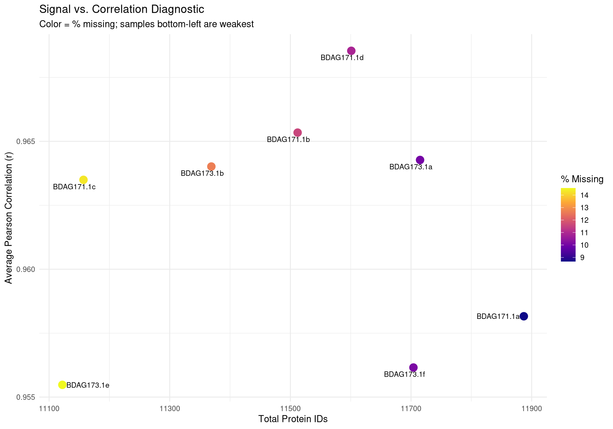
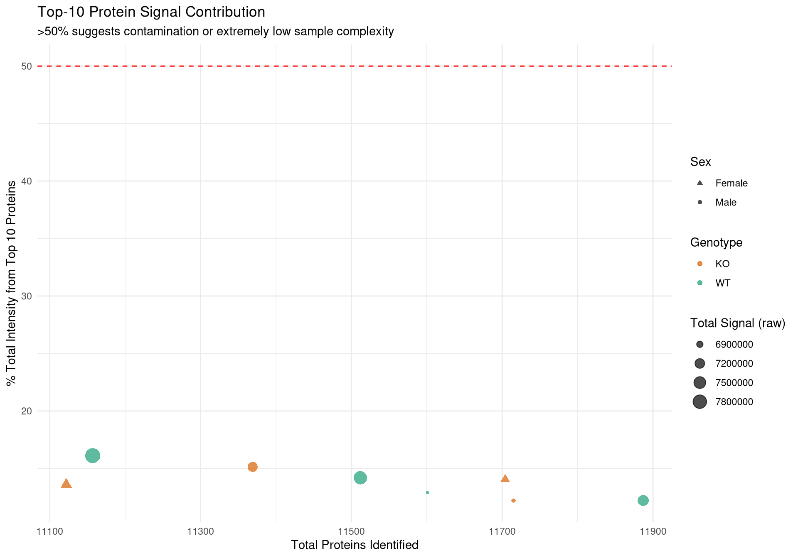

Code
library(data.table)
library(dplyr)
library(ggplot2)
library(stringr)
library(tidyr)
library(pheatmap)
library(ggrepel)library(data.table)
library(dplyr)
library(ggplot2)
library(stringr)
library(tidyr)
library(pheatmap)
library(ggrepel)base_dir <- "/nemo/lab/destrooperb/home/shared/zanettc/dom_proteomics"
run_num <- "run2"
input_dir <- file.path(base_dir, "data", "inputs",
"2026_04_23_SORL1_mg_total_proteomics")
input_file <- file.path(input_dir, "20260423_094931_S5-A10_Report_human.tsv")
results_dir <- file.path(base_dir, "results", run_num)
objects_dir <- file.path(base_dir, "data", "processed", run_num)
dir.create(results_dir, recursive = TRUE, showWarnings = FALSE)
dir.create(objects_dir, recursive = TRUE, showWarnings = FALSE)8 samples from a single S5 mass-spec batch (EXP1.1 cohort). Human iPSC-derived microglia xenografted into App NL-G-F mice; SORL1 genotype WT or KO. HET samples (ds31/32/41/42, EXP1.2) are not present in this file.
Note: BDAG173.1f was labelled ds52 in the study metadata but recorded as ds51 in Spectronaut. It is distinguished here by its plate position (S5-A10).
meta <- data.table(
FileName = c(
"ds12_S5-A1_1_6411", "ds11_S5-A2_1_6412",
"ds22_S5-A3_1_6413", "ds21_S5-A4_1_6414",
"ds51_S5-A9_1_6421", "ds51_S5-A10_1_6422",
"ds61_S5-A11_1_6423", "ds62_S5-A12_1_6424"
),
ShortName = c(
"BDAG171.1c", "BDAG171.1d",
"BDAG171.1a", "BDAG171.1b",
"BDAG173.1e", "BDAG173.1f",
"BDAG173.1b", "BDAG173.1a"
),
SampleNum = 1:8,
Genotype = c("WT", "WT", "WT", "WT", "KO", "KO", "KO", "KO"),
Sex = c("Male", "Male", "Male", "Male", "Female", "Female", "Male", "Male"),
CellCount = c(154300, 143900, 463400, 69340, 141800, 209800, 95890, 237400)
)
meta FileName ShortName SampleNum Genotype Sex CellCount
<char> <char> <int> <char> <char> <num>
1: ds12_S5-A1_1_6411 BDAG171.1c 1 WT Male 154300
2: ds11_S5-A2_1_6412 BDAG171.1d 2 WT Male 143900
3: ds22_S5-A3_1_6413 BDAG171.1a 3 WT Male 463400
4: ds21_S5-A4_1_6414 BDAG171.1b 4 WT Male 69340
5: ds51_S5-A9_1_6421 BDAG173.1e 5 KO Female 141800
6: ds51_S5-A10_1_6422 BDAG173.1f 6 KO Female 209800
7: ds61_S5-A11_1_6423 BDAG173.1b 7 KO Male 95890
8: ds62_S5-A12_1_6424 BDAG173.1a 8 KO Male 237400cat("Reading Spectronaut report (protein-level columns only)...\n")Reading Spectronaut report (protein-level columns only)...spec_raw <- fread(
input_file,
select = c("R.FileName", "PG.ProteinGroups", "PG.ProteinAccessions",
"PG.Qvalue", "PG.Quantity")
)
cat("Fragment rows loaded:", nrow(spec_raw), "\n")Fragment rows loaded: 6156104 cat("Unique samples in file:", uniqueN(spec_raw$R.FileName), "\n")Unique samples in file: 8 spec_dom <- spec_raw[R.FileName %in% meta$FileName]
cat("Fragment rows for Dom's samples:", nrow(spec_dom), "\n")Fragment rows for Dom's samples: 6156104 rm(spec_raw); gc() used (Mb) gc trigger (Mb) max used (Mb)
Ncells 1220486 65.2 2430275 129.8 2430275 129.8
Vcells 32943118 251.4 83722914 638.8 80397247 613.4PG.Quantity repeats for every fragment row of a protein within a sample — deduplicate to one row per protein–sample pair.
pg_long <- unique(spec_dom[, .(R.FileName, PG.ProteinGroups, PG.ProteinAccessions,
PG.Qvalue, PG.Quantity)])
cat("Unique protein-sample rows:", nrow(pg_long), "\n")Unique protein-sample rows: 104136 cat("Unique proteins: ", uniqueN(pg_long$PG.ProteinGroups), "\n")Unique proteins: 13017 Because BDAG173.1e and BDAG173.1f share the R.FileName prefix “ds51”, we join via meta (by plate position / FileName) before pivoting so each column carries a unique ShortName.
pg_long_named <- merge(pg_long, meta[, .(FileName, ShortName)],
by.x = "R.FileName", by.y = "FileName")
quant_wide <- dcast(
pg_long_named[, .(ShortName, PG.ProteinGroups, PG.Quantity)],
PG.ProteinGroups ~ ShortName,
value.var = "PG.Quantity"
)
sample_cols <- meta$ShortName
missing_samples <- setdiff(sample_cols, colnames(quant_wide))
if (length(missing_samples) > 0) {
warning("Missing from data: ", paste(missing_samples, collapse = ", "))
} else {
cat("All", length(sample_cols), "samples found in wide matrix.\n")
}All 8 samples found in wide matrix.quant_data <- quant_wide[, ..sample_cols]
quant_matrix <- as.matrix(quant_data)
quant_matrix[is.nan(quant_matrix)] <- NA
colnames(quant_matrix) <- meta$ShortName
cat("Proteins in matrix:", nrow(quant_matrix), "\n")Proteins in matrix: 13017 cat("Samples in matrix: ", ncol(quant_matrix), "\n")Samples in matrix: 8 With only 8 samples, statistical outlier rules (e.g. 3-MAD) are unreliable — use protein ID count and % missing as complementary metrics. Cell count is shown alongside, as very low input material (BDAG171.1b, 69 K cells) may drive missingness independently of technical QC failure.
total_pool <- nrow(quant_matrix)
protein_counts <- colSums(!is.na(quant_matrix) & quant_matrix > 0)
na_pct <- colMeans(is.na(quant_matrix) | quant_matrix == 0) * 100
qc_counts <- data.table(
ShortName = names(protein_counts),
Protein_Count = protein_counts,
NA_Percent = na_pct[names(protein_counts)]
)
qc_data <- merge(qc_counts, meta, by = "ShortName", all.x = TRUE)
cat("Total protein pool (union across all samples):", total_pool, "\n\n")Total protein pool (union across all samples): 13017 summary(qc_data$Protein_Count) Min. 1st Qu. Median Mean 3rd Qu. Max.
11122 11316 11556 11508 11707 11887 qc_data[order(NA_Percent), .(ShortName, Genotype, Sex, CellCount,
Protein_Count, NA_Percent = round(NA_Percent, 1))] ShortName Genotype Sex CellCount Protein_Count NA_Percent
<char> <char> <char> <num> <num> <num>
1: BDAG171.1a WT Male 463400 11887 8.7
2: BDAG173.1a KO Male 237400 11715 10.0
3: BDAG173.1f KO Female 209800 11704 10.1
4: BDAG171.1d WT Male 143900 11601 10.9
5: BDAG171.1b WT Male 69340 11512 11.6
6: BDAG173.1b KO Male 95890 11369 12.7
7: BDAG171.1c WT Male 154300 11157 14.3
8: BDAG173.1e KO Female 141800 11122 14.6miss_threshold <- 60
flagged_runs <- qc_data[NA_Percent > miss_threshold, ShortName]
if (length(flagged_runs) > 0) {
cat("Samples above", miss_threshold, "% missing (flagged for review):\n")
print(flagged_runs)
} else {
cat("No samples exceed the", miss_threshold, "% missing threshold.\n")
}No samples exceed the 60 % missing threshold.# Update failed_runs after reviewing the QC plots below.
failed_runs <- character(0)EG.FWHM is not present in this export — as a proxy we use NormalizedPeakArea / NormalizedPeakHeight at the fragment level (proportional to peak width). A systematic upward shift in one sample flags poor chromatographic performance.
cat("Reading fragment-level columns for peak quality...\n")Reading fragment-level columns for peak quality...frag_raw <- fread(
input_file,
select = c("R.FileName", "EG.PrecursorId",
"F.NormalizedPeakArea", "F.NormalizedPeakHeight",
"F.ExcludedFromQuantification")
)
frag_dom <- frag_raw[R.FileName %in% meta$FileName]
rm(frag_raw); gc() used (Mb) gc trigger (Mb) max used (Mb)
Ncells 1363907 72.9 2430275 129.8 2430275 129.8
Vcells 62712105 478.5 108114722 824.9 107388202 819.4frag_dom <- merge(frag_dom, meta[, .(FileName, ShortName, Genotype, Sex, SampleNum)],
by.x = "R.FileName", by.y = "FileName")
frag_dom <- frag_dom[
F.ExcludedFromQuantification == FALSE &
!is.na(F.NormalizedPeakArea) &
F.NormalizedPeakHeight > 0
]
frag_dom[, Peak_Width_Proxy := F.NormalizedPeakArea / F.NormalizedPeakHeight]
cat("Quantified fragments retained:", nrow(frag_dom), "\n")Quantified fragments retained: 3185972 cat("Samples present: ", uniqueN(frag_dom$ShortName), "\n")Samples present: 8 genotype_colours <- c("WT" = "#1b9e77", "KO" = "#d95f02")
sex_shapes <- c("Male" = 16, "Female" = 17)
p_peak <- ggplot(frag_dom,
aes(x = reorder(ShortName, SampleNum[match(ShortName, meta$ShortName)]),
y = Peak_Width_Proxy, fill = Genotype)) +
geom_boxplot(outlier.shape = NA, alpha = 0.8) +
coord_cartesian(ylim = quantile(frag_dom$Peak_Width_Proxy, c(0.01, 0.99), na.rm = TRUE)) +
scale_fill_manual(values = genotype_colours) +
theme_minimal() +
labs(title = "Peak Width Proxy per Sample (NormalisedArea / NormalisedHeight)",
subtitle = "Higher = broader peaks. Proper FWHM requires re-export with EG.FWHM column.",
x = "Sample", y = "Area / Height ratio") +
theme(axis.text.x = element_text(angle = 45, hjust = 1))
print(p_peak)
peak_summary <- frag_dom[, .(
Median_Width_Proxy = median(Peak_Width_Proxy, na.rm = TRUE),
P25 = quantile(Peak_Width_Proxy, 0.25, na.rm = TRUE),
P75 = quantile(Peak_Width_Proxy, 0.75, na.rm = TRUE)
), by = .(ShortName, Genotype, Sex)]
peak_summary <- merge(peak_summary, qc_data[, .(ShortName, SampleNum)], by = "ShortName")
p_peak_dot <- ggplot(peak_summary,
aes(x = reorder(ShortName, SampleNum),
y = Median_Width_Proxy, color = Genotype, shape = Sex)) +
geom_point(size = 4) +
geom_errorbar(aes(ymin = P25, ymax = P75), width = 0.3) +
scale_color_manual(values = genotype_colours) +
scale_shape_manual(values = sex_shapes) +
theme_minimal() +
labs(title = "Median Peak Width Proxy ± IQR",
subtitle = "Samples far above the group median have broader / lower-quality peaks",
x = "Sample", y = "Median Area / Height ratio") +
theme(axis.text.x = element_text(angle = 45, hjust = 1))
print(p_peak_dot)
# ── Plot 1: Protein Count per Sample ───────────────────────────────────────
p1 <- ggplot(qc_data,
aes(x = reorder(ShortName, Protein_Count),
y = Protein_Count, fill = Genotype)) +
geom_bar(stat = "identity") +
scale_fill_manual(values = genotype_colours) +
coord_flip() +
theme_minimal() +
labs(title = "Total Proteins Identified per Sample",
x = "Sample", y = "Protein Count")
# ── Plot 2: % Missing per Sample ────────────────────────────────────────────
p2 <- ggplot(qc_data,
aes(x = reorder(ShortName, NA_Percent),
y = NA_Percent, fill = Genotype)) +
geom_bar(stat = "identity") +
geom_hline(yintercept = miss_threshold, color = "red", linetype = "dashed", linewidth = 1) +
annotate("text", x = 1.5, y = miss_threshold + 1,
label = paste0(miss_threshold, "% threshold"), color = "red", hjust = 0) +
scale_fill_manual(values = genotype_colours) +
coord_flip() +
theme_minimal() +
labs(title = "% Missing Values per Sample",
subtitle = "% of the total protein pool absent in each sample",
x = "Sample", y = "% Missing")
# ── Plot 3: Protein Yield by Genotype with cell count ───────────────────────
p3 <- ggplot(qc_data, aes(x = Genotype, y = Protein_Count, fill = Genotype)) +
geom_boxplot(outlier.shape = NA, alpha = 0.7) +
geom_point(aes(shape = Sex, size = CellCount / 1e3), alpha = 0.8,
position = position_jitter(width = 0.15)) +
geom_text_repel(aes(label = ShortName), size = 3) +
scale_fill_manual(values = genotype_colours) +
scale_shape_manual(values = sex_shapes) +
scale_x_discrete(limits = c("WT", "KO")) +
theme_minimal() +
labs(title = "Protein Yield by Genotype",
subtitle = "Point size = cell count (thousands); shape = sex",
x = "Genotype", y = "Protein Count", size = "Cell count (K)")
# ── PCA ─────────────────────────────────────────────────────────────────────
cat("Preparing PCA...\n")Preparing PCA...pca_mat_log <- log2(quant_matrix + 1)
pca_mat_log_t <- t(pca_mat_log)
noise_floor <- min(pca_mat_log_t[pca_mat_log_t > 0], na.rm = TRUE) / 2
pca_mat_log_t[is.na(pca_mat_log_t) | pca_mat_log_t == 0] <- noise_floor
valid_cols <- apply(pca_mat_log_t, 2, var) > 0
pca_mat_log_t <- pca_mat_log_t[, valid_cols]
cat("Proteins retained for PCA (non-zero variance):", sum(valid_cols), "\n")Proteins retained for PCA (non-zero variance): 12042 pca_res <- prcomp(pca_mat_log_t, center = TRUE, scale. = TRUE)
var_expl <- round(100 * pca_res$sdev^2 / sum(pca_res$sdev^2), 1)
pca_df <- as.data.frame(pca_res$x)
pca_df$ShortName <- rownames(pca_df)
pca_df <- merge(pca_df, meta, by = "ShortName", all.x = TRUE)
pca_df <- merge(pca_df, qc_data[, .(ShortName, NA_Percent)], by = "ShortName")
# ── Plot 4: PCA by Genotype ─────────────────────────────────────────────────
p4 <- ggplot(pca_df, aes(x = PC1, y = PC2, color = Genotype, shape = Sex)) +
geom_point(size = 4, alpha = 0.85) +
geom_text_repel(aes(label = ShortName), size = 3, max.overlaps = 20) +
scale_color_manual(values = genotype_colours) +
scale_shape_manual(values = sex_shapes) +
theme_minimal() +
labs(title = "PCA of Log2 Protein Intensities",
subtitle = "Color = SORL1 genotype; shape = sex",
x = paste0("PC1 (", var_expl[1], "%)"),
y = paste0("PC2 (", var_expl[2], "%)"))
# ── Plot 5: PCA coloured by % missing ───────────────────────────────────────
p5 <- ggplot(pca_df, aes(x = PC1, y = PC2, color = NA_Percent)) +
geom_point(size = 4, alpha = 0.85) +
geom_text_repel(aes(label = ShortName), size = 3, max.overlaps = 20) +
scale_color_viridis_c(name = "% Missing", option = "plasma") +
theme_minimal() +
labs(title = "PCA coloured by % Missing",
subtitle = "If a weak sample drives a PC, it should be removed before MSstats",
x = paste0("PC1 (", var_expl[1], "%)"),
y = paste0("PC2 (", var_expl[2], "%)"))
# ── Plot 6: PC3 vs PC4 ──────────────────────────────────────────────────────
p6 <- ggplot(pca_df, aes(x = PC3, y = PC4, color = Genotype, shape = Sex)) +
geom_point(size = 4, alpha = 0.85) +
geom_text_repel(aes(label = ShortName), size = 3, max.overlaps = 20) +
scale_color_manual(values = genotype_colours) +
scale_shape_manual(values = sex_shapes) +
theme_minimal() +
labs(title = "PCA — PC3 vs PC4",
x = paste0("PC3 (", var_expl[3], "%)"),
y = paste0("PC4 (", var_expl[4], "%)"))
# ── Save PDF ────────────────────────────────────────────────────────────────
pdf_path <- file.path(results_dir, "Initial_QC_Report.pdf")
cat("Saving PDF:", pdf_path, "\n")Saving PDF: /nemo/lab/destrooperb/home/shared/zanettc/dom_proteomics/results/run2/Initial_QC_Report.pdf pdf(pdf_path, width = 10, height = 7)
print(p1); print(p2); print(p3); print(p4); print(p5); print(p6)Warning in grid.Call.graphics(C_text, as.graphicsAnnot(x$label), x$x, x$y, :
for 'PCA — PC3 vs PC4' in 'mbcsToSbcs': - substituted for — (U+2014)print(p_peak); print(p_peak_dot)
dev.off()png
2 print(p1); print(p2); print(p3); print(p4); print(p5); print(p6)





Log2 intensity boxplots per sample, ordered by sample number. Flagged samples shown with a red outline.
quant_log_plot <- log2(quant_matrix + 1)
quant_log_plot[quant_log_plot == 0] <- NA
abund_long <- as.data.frame(quant_log_plot) %>%
mutate(Protein = row_number()) %>%
pivot_longer(-Protein, names_to = "ShortName", values_to = "Log2_Intensity") %>%
drop_na() %>%
left_join(as.data.frame(qc_data), by = "ShortName") %>%
mutate(Status = ifelse(ShortName %in% failed_runs, "Flagged", "Pass"))
p_abund <- ggplot(abund_long, aes(x = reorder(ShortName, SampleNum),
y = Log2_Intensity, fill = Genotype)) +
geom_boxplot(aes(color = Status), outlier.shape = NA, lwd = 0.4) +
scale_fill_manual(values = genotype_colours) +
scale_color_manual(values = c("Pass" = "black", "Flagged" = "red")) +
theme_minimal() +
labs(title = "Log2 Abundance per Sample",
subtitle = "Red outlines = samples exceeding % missing threshold",
x = "Sample", y = "Log2 Intensity") +
theme(axis.text.x = element_text(angle = 45, hjust = 1))
print(p_abund)
Samples grouped by genotype then sex so biological structure is visible.
quant_mat_cor <- log2(quant_matrix + 1)
quant_mat_cor[quant_mat_cor == 0] <- NA
cor_mat <- cor(quant_mat_cor, use = "pairwise.complete.obs")
meta_sorted <- meta[order(Genotype, Sex, SampleNum)] %>% as.data.frame()
sorted_names <- meta_sorted$ShortName
cor_mat_sorted <- cor_mat[sorted_names, sorted_names]
anno_df <- meta_sorted %>%
select(ShortName, Genotype, Sex) %>%
as.data.frame()
rownames(anno_df) <- anno_df$ShortName
anno_df$ShortName <- NULL
pheatmap(cor_mat_sorted,
main = "Pearson Correlation: Grouped by Genotype × Sex",
annotation_col = anno_df,
annotation_colors = list(
Genotype = genotype_colours,
Sex = c("Male" = "#4393c3", "Female" = "#d6604d")
),
cluster_rows = FALSE,
cluster_cols = FALSE,
show_rownames = TRUE,
show_colnames = TRUE,
color = colorRampPalette(c("navy", "white", "firebrick3"))(100),
gaps_col = which(diff(as.numeric(as.factor(meta_sorted$Genotype))) != 0),
gaps_row = which(diff(as.numeric(as.factor(meta_sorted$Genotype))) != 0))
Identifies the sample with the lowest mean pairwise correlation.
qc_diagnostics <- data.table(
ShortName = colnames(quant_mat_cor),
Protein_Count = protein_counts[colnames(quant_mat_cor)],
NA_Percent = na_pct[colnames(quant_mat_cor)],
Avg_Correlation = rowMeans(cor_mat, na.rm = TRUE)
)
outlier_id <- qc_diagnostics[which.min(Avg_Correlation), ShortName]
cat("--- Lowest-correlation sample ---\n")--- Lowest-correlation sample ---print(qc_diagnostics[ShortName == outlier_id]) ShortName Protein_Count NA_Percent Avg_Correlation
<char> <num> <num> <num>
1: BDAG173.1e 11122 14.55789 0.9554788cat("\nAll samples ranked by correlation:\n")
All samples ranked by correlation:print(qc_diagnostics[order(Avg_Correlation)]) ShortName Protein_Count NA_Percent Avg_Correlation
<char> <num> <num> <num>
1: BDAG173.1e 11122 14.557886 0.9554788
2: BDAG173.1f 11704 10.086810 0.9561551
3: BDAG171.1a 11887 8.680956 0.9581603
4: BDAG171.1c 11157 14.289007 0.9634957
5: BDAG173.1b 11369 12.660367 0.9640160
6: BDAG173.1a 11715 10.002305 0.9642724
7: BDAG171.1b 11512 11.561804 0.9653424
8: BDAG171.1d 11601 10.878083 0.9685415p_diag <- ggplot(qc_diagnostics, aes(x = Protein_Count, y = Avg_Correlation)) +
geom_point(aes(color = NA_Percent), size = 4) +
geom_text_repel(aes(label = ShortName), size = 3, max.overlaps = 20) +
scale_color_viridis_c(name = "% Missing", option = "plasma") +
theme_minimal() +
labs(title = "Signal vs. Correlation Diagnostic",
subtitle = "Color = % missing; samples bottom-left are weakest",
x = "Total Protein IDs", y = "Average Pearson Correlation (r)")
print(p_diag)
Values >50% suggest a very low-complexity sample or dominant contaminants (e.g. keratins, actin).
calc_top_n_pct <- function(column, n = 10) {
sorted_vals <- sort(column, decreasing = TRUE, na.last = TRUE)
(sum(sorted_vals[1:n], na.rm = TRUE) / sum(column, na.rm = TRUE)) * 100
}
top10_metrics <- apply(quant_matrix, 2, calc_top_n_pct, n = 10)
qc_data[, Top10_Percent := top10_metrics[ShortName]]
qc_data[, Total_Intensity := colSums(quant_matrix, na.rm = TRUE)[ShortName]]
contaminant_suspects <- qc_data[Top10_Percent > 50,
.(ShortName, Genotype, Sex, Protein_Count, Top10_Percent)]
cat("Samples where top 10 proteins account for >50% of signal:\n")Samples where top 10 proteins account for >50% of signal:print(contaminant_suspects)Key: <ShortName>
Empty data.table (0 rows and 5 cols): ShortName,Genotype,Sex,Protein_Count,Top10_Percentp_top10 <- ggplot(qc_data, aes(x = Protein_Count, y = Top10_Percent)) +
geom_point(aes(color = Genotype, shape = Sex, size = Total_Intensity), alpha = 0.7) +
geom_hline(yintercept = 50, linetype = "dashed", color = "red") +
geom_text_repel(
aes(label = ifelse(Top10_Percent > 50, ShortName, "")),
size = 3, max.overlaps = 10
) +
scale_color_manual(values = genotype_colours) +
scale_shape_manual(values = sex_shapes) +
theme_minimal() +
labs(title = "Top-10 Protein Signal Contribution",
subtitle = ">50% suggests contamination or extremely low sample complexity",
x = "Total Proteins Identified",
y = "% Total Intensity from Top 10 Proteins",
size = "Total Signal (raw)")
print(p_top10)
if (nrow(contaminant_suspects) > 0) {
suspect_short <- contaminant_suspects$ShortName
top_ids <- apply(quant_matrix[, suspect_short, drop = FALSE], 2, function(x) {
quant_wide$PG.ProteinGroups[which.max(x)]
})
cat("Top protein per suspect sample:\n")
print(top_ids)
} else {
cat("No suspect samples to investigate.\n")
}No suspect samples to investigate.cat("=== QC SUMMARY ===\n\n")=== QC SUMMARY ===cat("Total samples: ", nrow(meta), "\n")Total samples: 8 cat("Samples dropped (manual review): ", length(failed_runs), "\n")Samples dropped (manual review): 0 if (length(failed_runs) > 0) {
cat(" -> Dropped:", paste(failed_runs, collapse = ", "), "\n")
}
final_names <- setdiff(meta$ShortName, failed_runs)
cat("Samples retained: ", length(final_names), "\n\n")Samples retained: 8 qc_data[, .(ShortName, Genotype, Sex, CellCount, Protein_Count,
NA_Percent = round(NA_Percent, 1),
Avg_Correlation = round(rowMeans(cor_mat, na.rm = TRUE), 3),
Top10_Percent = round(Top10_Percent, 1))][order(Genotype, Sex, ShortName)] ShortName Genotype Sex CellCount Protein_Count NA_Percent
<char> <char> <char> <num> <num> <num>
1: BDAG173.1e KO Female 141800 11122 14.6
2: BDAG173.1f KO Female 209800 11704 10.1
3: BDAG173.1a KO Male 237400 11715 10.0
4: BDAG173.1b KO Male 95890 11369 12.7
5: BDAG171.1a WT Male 463400 11887 8.7
6: BDAG171.1b WT Male 69340 11512 11.6
7: BDAG171.1c WT Male 154300 11157 14.3
8: BDAG171.1d WT Male 143900 11601 10.9
Avg_Correlation Top10_Percent
<num> <num>
1: 0.964 13.6
2: 0.964 14.1
3: 0.955 12.2
4: 0.956 15.1
5: 0.963 12.2
6: 0.969 14.2
7: 0.958 16.1
8: 0.965 12.9final_filenames <- meta[ShortName %in% final_names, FileName]
final_short_names <- meta[FileName %in% final_filenames, ShortName]
clean_spec_dom <- spec_dom[R.FileName %in% final_filenames]
clean_quant_wide <- quant_wide[, c("PG.ProteinGroups", final_short_names), with = FALSE]
clean_meta <- qc_data[ShortName %in% final_names]
if (length(failed_runs) > 0) {
dropped_log <- qc_data[ShortName %in% failed_runs,
.(ShortName, FileName, Genotype, Sex, Protein_Count, NA_Percent)]
dropped_log[, Reason := paste0("Above ", miss_threshold, "% missing threshold")]
fwrite(dropped_log, file.path(objects_dir, "dropped_samples_log.csv"))
}
fwrite(clean_spec_dom, file.path(objects_dir, "clean_spec_dom.csv"))
fwrite(clean_meta, file.path(objects_dir, "clean_metadata.csv"))
fwrite(clean_quant_wide, file.path(objects_dir, "clean_quant_wide.csv"))
cat("Objects saved to:", objects_dir, "\n")Objects saved to: /nemo/lab/destrooperb/home/shared/zanettc/dom_proteomics/data/processed/run2